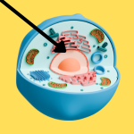

Score: 0 / 0
Signal Transduction
-
Signal transduction is the process by which a cell responds to external
signals, leading to a cellular response.
-
The binding of a ligand to its receptor initiates the signaling cascade.
-
This can result in changes in gene expression, enzyme activity, or cell
behavior.
-
The first step is often the activation of a
receptor, which can be a membrane-bound protein or a cytoplasmic receptor.
-
Receptor activation leads to a series of intracellular events, often
involving second messengers like cAMP or calcium ions.
-
These events can amplify the signal and lead to a specific cellular
response.
-
Receptors: Proteins that bind to signaling molecules (ligands).
-
Second messengers: Small molecules that relay signals inside the cell (e.g., cAMP,
calcium ions).
.gif)
-
Protein kinases: Enzymes that add phosphate groups to proteins, often activating
or deactivating them.

-
Transcription factors: Proteins that regulate gene expression in response to signaling
events.
-
Signal transduction pathways can be classified into different types
based on their characteristics, such as:
-
G protein-coupled receptors
(GPCRs), which activate intracellular signaling cascades through the
binding of ligands.
-
Receptor tyrosine kinases
(RTKs), which dimerize and autophosphorylate upon ligand binding,
activating downstream signaling pathways.
-
Ion channel receptors, which open or close in response to ligand binding, allowing ions
to flow across the membrane.
.png)
-
Nuclear receptors, which regulate gene expression in response to lipid-soluble
signaling molecules.
